Official program: Etchmiadzin Cathedral (seat of the Catholicos, founded 301/303 AD), Yerevan city walk, Tsitsernakaberd Genocide Memorial. Evening free.
Etchmiadzin Cathedral: According to legend, Christ appeared to Gregory the Illuminator in a vision and showed him the spot where the first church was to be built – hence the name “Etchmiadzin”, “the Only-Begotten descended”. Construction began in 301, consecration followed in 303 over the foundations of a pagan fire temple, making it the oldest state-built church in Christendom. Seat of the Catholicos of All Armenians, a UNESCO World Heritage Site since 2000.
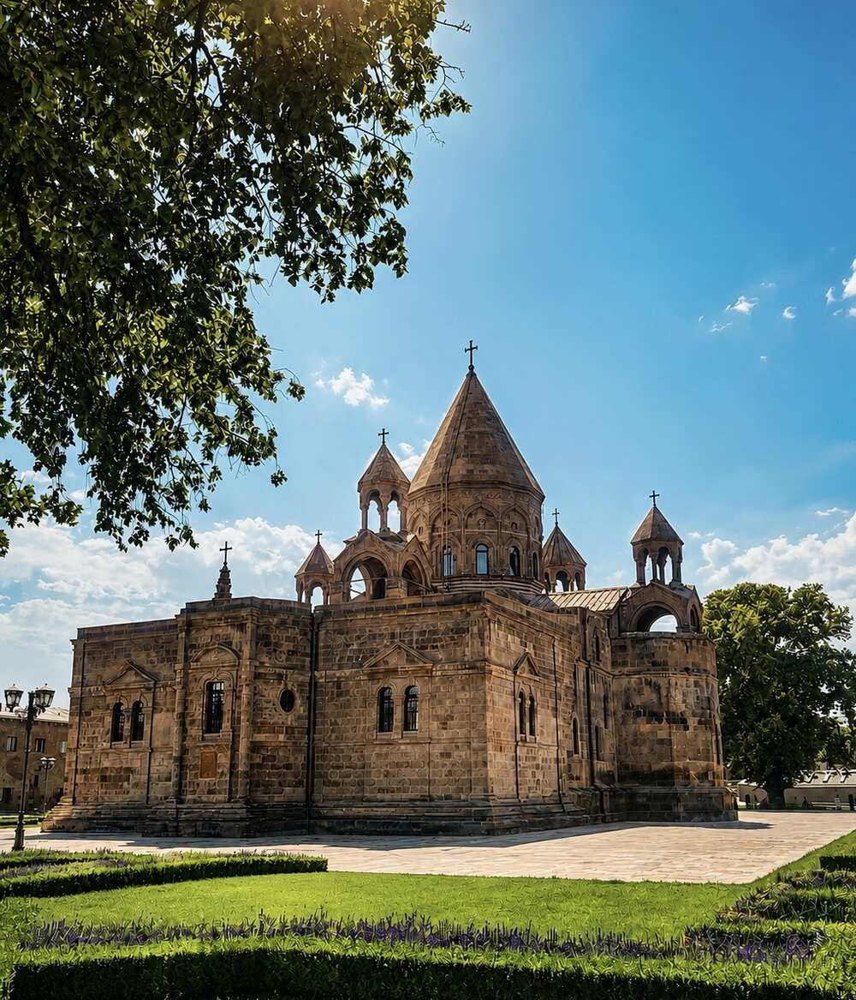

Dress code: no shorts allowed – wrap cloths are available at the entrance.
Treasury: The Manukian Museum on the monastery grounds holds the most important relics of the Armenian Apostolic Church: the tip of the Holy Lance, a splinter of the True Cross, a fragment of Noah's Ark, and the right arm of Gregory the Illuminator.

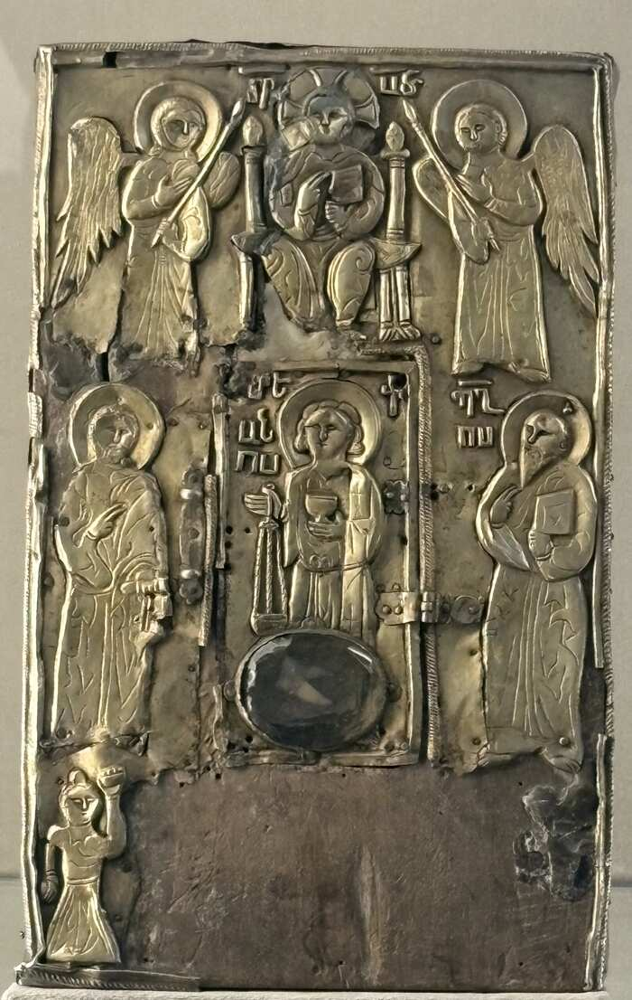
Clergy on site: A deacon in liturgical vestments (red-and-gold cape over a black cassock, vardapet cross in hand) and a monk wearing the pointed hood (veghar) typical of Armenian Apostolic clergy.


Passing through the city: Walked past a monument decorated with Armenian flags at an intersection. A shopping street with a restored tsarist-era tuff-stone facade and modern retail rows at street level – the typical Yerevan juxtaposition of historic shell and present-day commerce.

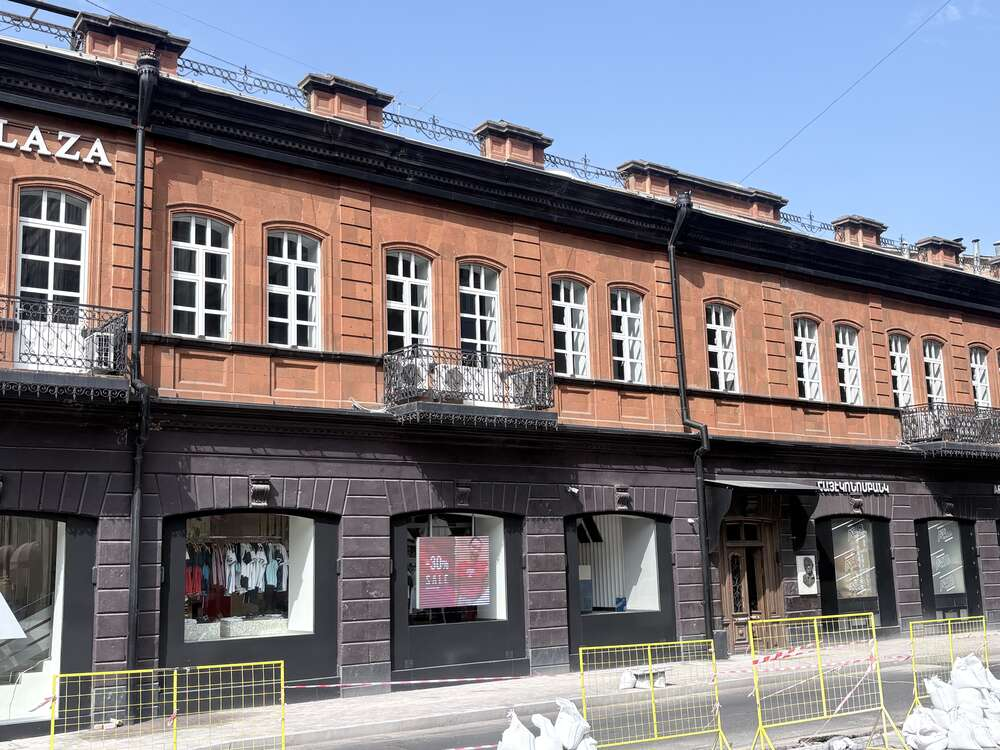
Cascade & Cafesjian Sculpture Garden: 572 steps, 118 m high, built of light-colored travertine. It goes back to Alexander Tamanian's 1920s master plan, but construction only began in 1971; after the 1988 earthquake and the end of the Soviet Union, the complex sat unfinished for decades. Armenian-American collector Gerard Cafesjian financed its completion, along with a museum of contemporary art, with 128 million US dollars between 2002 and 2009.


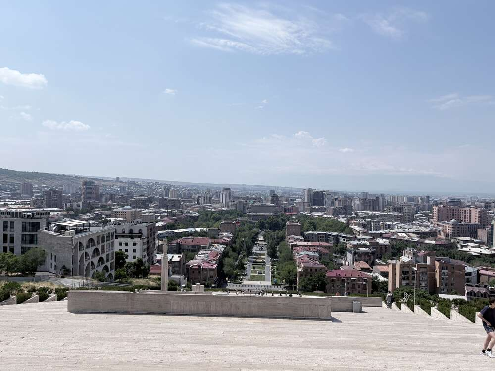
The circular ornaments echo Armenian carpet patterns – the same motif as on Republic Square (Day 1).
Tamanian monument: At the foot of the Cascade stands the 1974 statue of city planner Alexander Tamanian by Artashes Hovsepyan, showing him bent over a stone slab – it rests on two unequal stones representing old and new Armenian architecture.
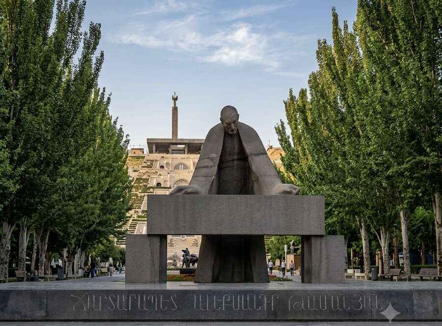
Sculpture garden: The Cafesjian sculpture park displays works by international sculptors (Botero, Chadwick, Plensa, Flanagan) – most eye-catching are two oversized bronzes by Fernando Botero: a reclining woman and a “Roman Warrior”.
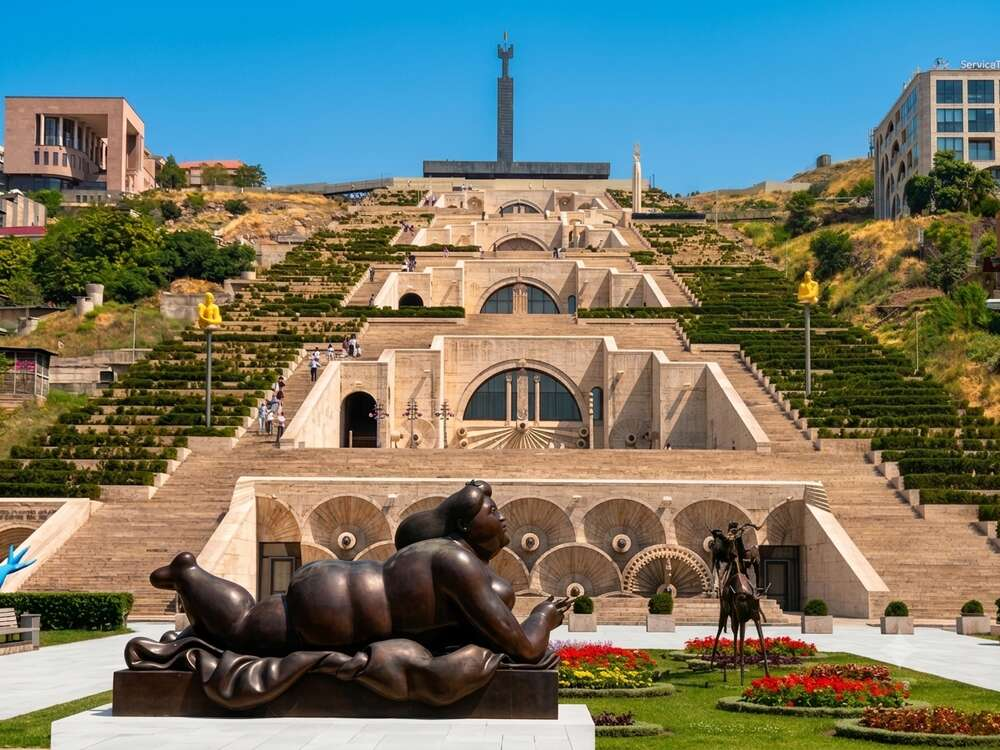
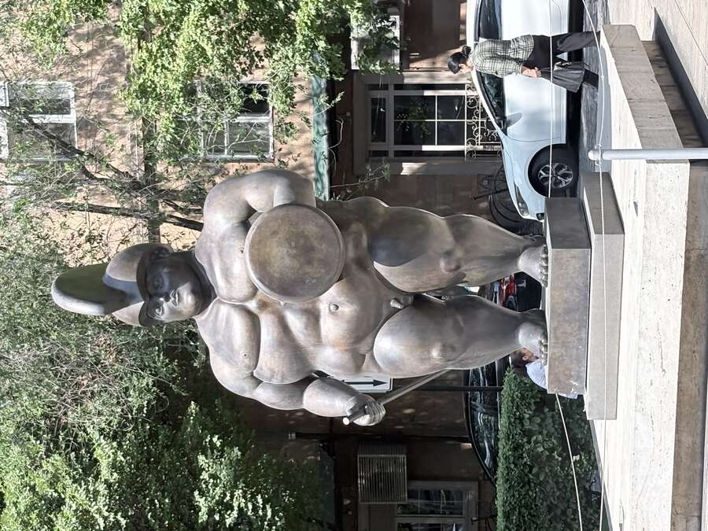
Mother Armenia (Victory Park): Inaugurated in 1950 as a Stalin monument; the Stalin statue was taken down in 1962, and since 1967 the present Mother Armenia figure (sculptor Ara Harutyunyan) has stood here. A copper statue, 22 m tall, on a 32 m pedestal that houses a five-story military museum – dedicated to the roughly 650,000 Armenian soldiers of the Second World War and to those killed in the Karabakh conflict. The interior of the pedestal is modeled on the Sarkis Cathedral in Etchmiadzin.


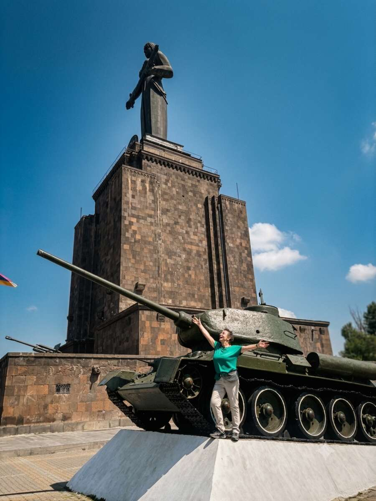
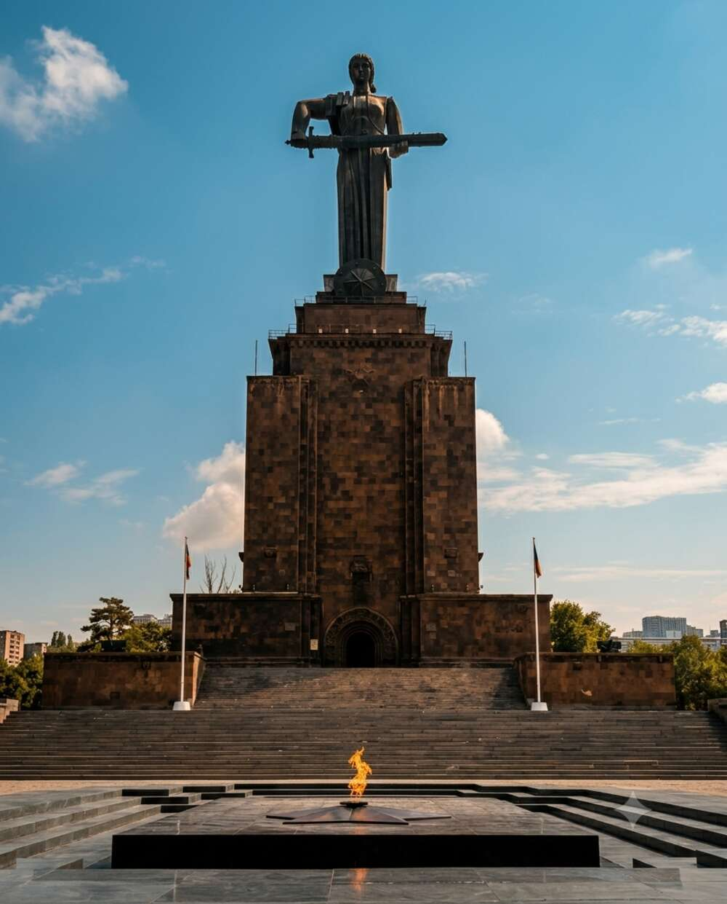
Open-air exhibition: a Soviet anti-aircraft missile and rocket launchers mounted on Armenian gravestone-style pedestals. A T-34 tank you can climb on. Eternal flame at the tomb of the unknown soldier.
Tsitsernakaberd Genocide Memorial: Built in 1967 on Tsitsernakaberd hill (“swallow's fortress”), with an adjoining museum since 1995. Twelve inward-leaning basalt slabs form a circle around the eternal flame, set 1.5 m below ground – they stand for the twelve lost provinces of Western Armenia in what is now Turkey. Next to it rises a 44 m stele split in two by a narrow gap: the larger half represents the Republic of Armenia, the smaller one the lost western territories.
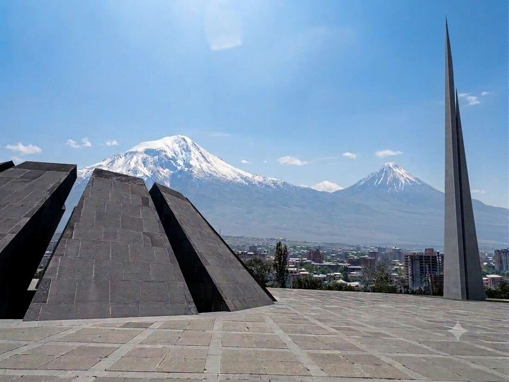


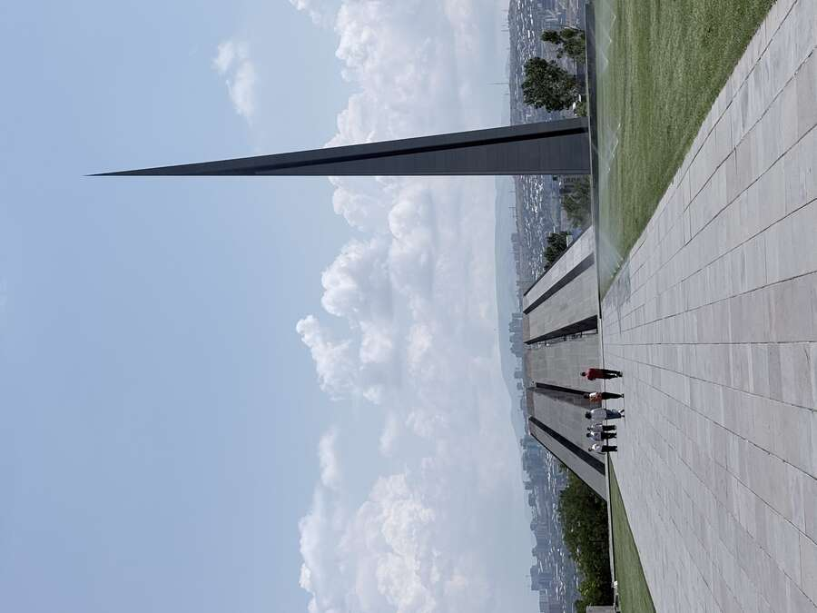
View of twin-peaked Mount Ararat. The eternal flame is ringed with fresh flowers every day.
Lavash & khorovats: Lavash is baked right inside the tonir clay oven – the dough is slapped onto the glowing-hot inner wall. Afterwards a classic grill platter: lula kebab, grilled fish, eggplant and peppers roasted directly on the embers – typical Armenian “khorovats”.


Meat counter with skewers prepped for grilling at home – standard in Yerevan's butcher shops, not just in restaurants.